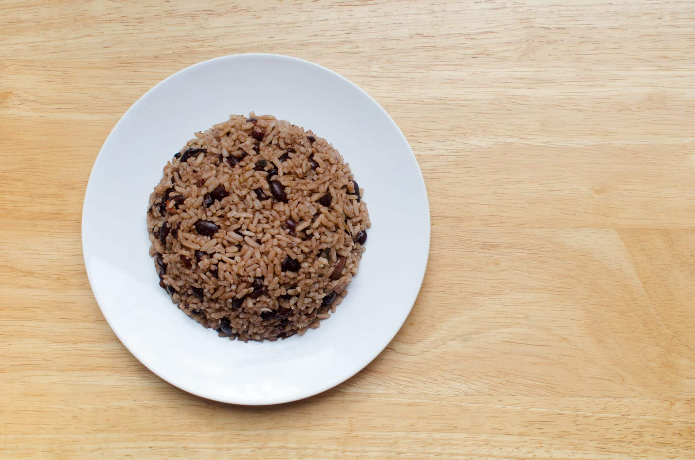

Gallo pinto is a traditional Nicaraguan dish. It's mainly eaten during brekfast, although it is so versatile it can be eaten at any meal during the day.
This dish can be prepared in less than 10 minutes and needs very few ingredients to prepare it, making it a great choice for anyone.